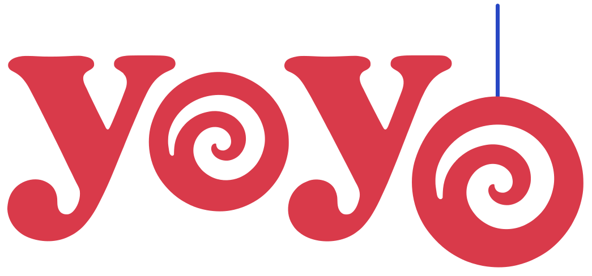
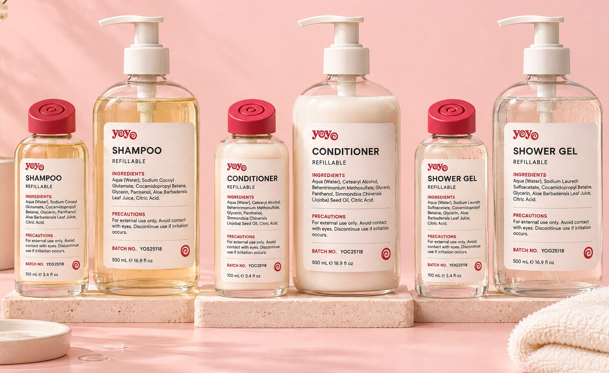
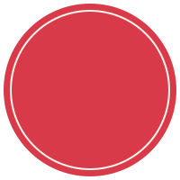
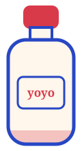
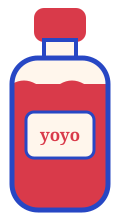
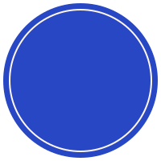

Yoyo sells shampoo, conditioner and shower gel in glass bottles you never have to wash yourself. Bring the empty one back, swap it for a clean one and fill it up again.
Keep scrolling. We're going down the string.


What you can do now
01
ThenEvery new shampoo came in a new bottle.
NowSwap your empty bottle for a clean one and fill it with whatever you fancy next.
02
ThenRefill shops asked you to bring a bottle you'd washed at home.
NowHand in your empty bottle as it is. We wash and check it in the store.
Why Yoyo
Every bottle is washed and checked in the store before it goes out again.
After that you only pay for what's inside, as long as you bring the empty one back.
Swap on a shopping trip you were making anyway. Normal liquid products, no bars to get used to.
Our hero feature
One counter, four steps, no washing up. Your bottle goes back into circulation and you walk out with a clean one.
You only pay for what's inside.


Behind the counter
We take care of the cleaning, so you never have to wonder whose bottle you're holding.
A staff member looks for cracks and chips before we accept it.
It goes through the bottle washer in the store, with other returned bottles.
Rinsed, given a hygiene treatment and dried, ready for the next person.
Every refill gets a new wash-off label with ingredients, precautions and a batch number.

Pumps are reused where that's hygienic. When one is worn out, bring it to the store and we collect it for recycling.
“I used to throw a shampoo bottle away every month. Now I swap mine when I'm in town anyway, and I've never had to wash one.”
Find a store